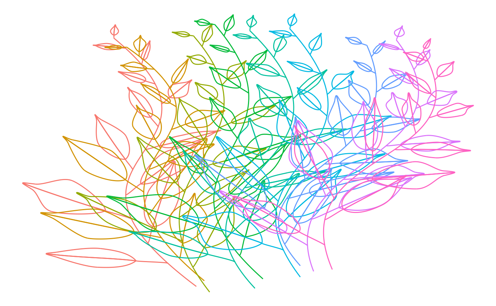

Create polygons from benjamini leaves
Source:vignettes/create_benjamini_polygons.Rmd
create_benjamini_polygons.RmdIn this vignette we’ll have a look how the leaves represented by the
bezier structures of benjamini_leaf() can be transformed to
polygons.
Let’s first load the necessary packages:
library(ggbenjamini)
library(dplyr)
library(purrr)
library(tidyr)
library(stringr)
library(ggplot2)
library(ggforce)
library(ambient)
set.seed(123)Béziers
Now we’ll create a data structure consisting of multiple bezier curves that we can use to grow branches after (DON’T TRY TO UNDERSTAND THIS CODE! I’M SURE YOU COULD DO THAT MUCH BETTER…):
size <- 160
# df_branches <- tibble(
# x = sample(1:size, 20, replace = TRUE),
# y = sample(1:size, 20, replace = TRUE),
# i_branch = rep(1:5, each = 4)
# )
xo = seq(-size/2, size/2, by = size/8) * 0.8
xm1 = xo * 0.75 - size/4
xm2 = xo * 0.75 + size/4
xu = xo * 0.5
y = rep(c(0.9, 0.5, 0.5, 0.1) * size, length(xo))
f <- function(xu, xm1, xm2, xo, y) {
tibble(xu, xm1, xm2, xo) %>%
mutate(i_branch = row_number()) %>%
pivot_longer(-i_branch, values_to = "x") %>%
mutate(y = y) %>%
mutate()
}
df_branches <- f(xu, xm1, xm2, xo, y) %>%
mutate(x = x + size/2) %>%
mutate_at(
c("x", "y"),
~ .x + sample(
(-size/20):(size/20),
length(xo),
replace = FALSE
)
)
df_branches
#> # A tibble: 36 × 4
#> i_branch name x y
#> <int> <chr> <dbl> <dbl>
#> 1 1 xu 54 149
#> 2 1 xm1 -14 77
#> 3 1 xm2 77 80
#> 4 1 xo 23 17
#> 5 2 xu 57 146
#> 6 2 xm1 -3 76
#> 7 2 xm2 81 74
#> 8 2 xo 28 22
#> 9 3 xu 59 152
#> 10 3 xm1 22 85
#> # … with 26 more rowsNow we can grow leaves on these branches:
df_branches_and_leaves <- df_branches %>%
group_split(i_branch) %>%
map_dfr(
~benjamini_branch(df_branch = .x[c("x", "y")]),
.id = "i_branch"
)When we plot these bezier curves with ggplot2, we can color the outlines of the different elements:
df_branches_and_leaves %>%
unite(idx, i_branch, i_leaf, i_part, element, remove = FALSE) %>%
ggplot(aes(x = x, y = y, group = idx, color = factor(i_branch))) +
geom_bezier(show.legend = FALSE) +
scale_y_reverse() +
theme_void()
Quite messy, all these lines! In order for the leaves to cover what’s below, have a look at the following section.
Polygons
If we want to fill these shapes with color we can first approximate
the bezier curves with piecewise linear curves of length
n = 100 for each bezier. Furthermore, we’ll add some
simplex noise to make them look more interesting:
df2 <- df_branches_and_leaves %>%
unite(idx, i_branch, i_leaf, element, remove = FALSE) %>%
bezier_to_polygon(idx, i_branch, i_leaf, element, i_part, n = 100) %>%
mutate(
x2 = x + gen_simplex(x, y, frequency = 0.05, seed = 123),
y2 = y + gen_simplex(x, y, frequency = 0.05, seed = 123)
)
#> Warning: Returning more (or less) than 1 row per `summarise()` group was deprecated in
#> dplyr 1.1.0.
#> ℹ Please use `reframe()` instead.
#> ℹ When switching from `summarise()` to `reframe()`, remember that `reframe()`
#> always returns an ungrouped data frame and adjust accordingly.
#> ℹ The deprecated feature was likely used in the ggbenjamini package.
#> Please report the issue to the authors.Now we can plot them with ggplot2s
geom_path() for the branch and the leaf stalks and
geom_polygon() for the 2 leaf halves.
ggplot(
data = df2 %>%
filter(str_detect(element, "^half [12]$")),
aes(x = x2, y = y2, group = idx, fill = factor(idx))
) +
geom_path(
data = df2 %>%
filter(!str_detect(element, "^half [12]$")),
aes(x = x2, y = y2, group = idx),
show.legend = FALSE,
color = "black"
) +
geom_polygon(show.legend = FALSE, color = "black") +
scale_y_reverse() +
theme_void() If you look closely, you’ll see that the leaves cover all leaf stalks and branches. This happens because in the ggplot, we first plot all pathes and then all polygons.